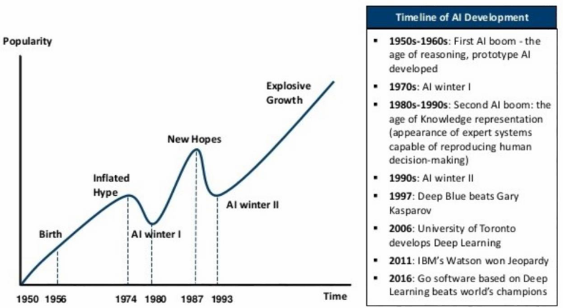
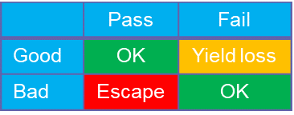
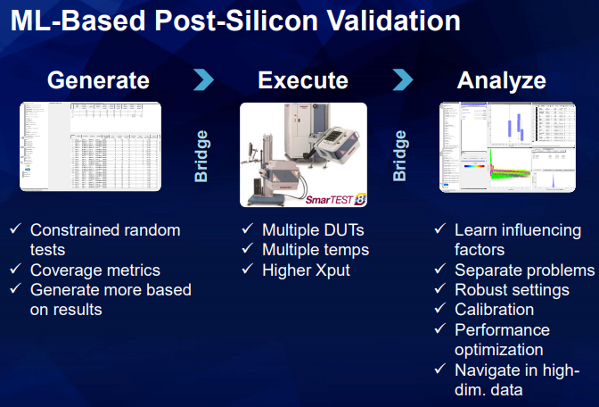

By Ira Leventhal, Vice President, Applied Research Technology and Ventures, Advantest America, and Jochen Rivoir, Fellow, Advantest Europe
Interest in implementing artificial intelligence (AI) for a wide range of industries has been growing steadily due to its potential for streamlining functions and delivering time and cost savings. However, in order for electrical and electronic systems utilizing AI to be truly dependable, the AI itself must be trustable.
As Figure 1 shows, dependable systems have a number of shared characteristics: availability, reliability, safety, integrity, and maintainability. This is particularly essential for mission-critical environments such as those illustrated. Users need to be confident that the system will perform the appropriate actions in a given situation, and that it can’t be hacked into, which means the AI needs to be trustable from the ground up. As a test company, we’re looking at what we can do down at the semiconductor level to apply trustable, explainable AI in the process.
Figure 1. Dependable systems are essential for electrical and electronic applications, particularly those with life-or-death implications. These Photos by Unknown Authors are licensed under CC BY-SA and CC BY-NC.
What is trustable AI?
Currently, much of AI is a black box; we don’t always know why the AI is telling us to do something. Let’s say you’re using AI to determine pass or fail on a test. You need to understand what conditions will cause the test to fail – how much can you trust the results? And how do you deal with errors? You need to understand what’s going on inside the AI, particularly with deep learning models: which errors are critical, which aren’t, and why a decision is made.
A recent, tragic example is the Boeing 737 MAX8 jet. At the end of the day, the crashes that occurred were due to failure of an AI system. The autopilot system was designed, based on the sensor data it was continually monitoring, to engage and prevent stalling at a high angle of attack – all behind the scenes without the pilot knowing it had taken place. The problem was that the system engaged corrective action at the wrong time because it was getting bad data from the sensor. This makes it an explainable failure – technically, the AI algorithm worked the way it was supposed to, but the sensors malfunctioned. Boeing could potentially rebuild confidence in the airplane by explaining what happened and what they’re doing to prevent future disasters – e.g., adding more redundancy, taking data from more sensors, improving pilot training, etc.
But what if a deep learning model was the autopilot rather than the simpler model that acts based on sensor data? Due to the black box nature of deep learning models, it would be difficult to assure the public that the manufacturer knew exactly what caused the problem – the best they could do would be to take what seemed like logical measures to correct the issue, but the system would NOT be trustable.
What does this mean for AI going forward? What are the implications of not having trustable AI? To understand this, we need to look briefly at the evolution of AI.
The “next big thing”… for 70 years
As Figure 2 shows, for seven decades now, AI has been touted as the next big thing. Early on, AI pioneer Alan Turing recognized that a computer equivalent to a child’s brain could be trained to learn and evolve into an adult-like brain, but bringing this to fruition has taken longer that he likely anticipated. During the first 25 years of the AI boom, many demos and prototypes were created to show the power of neural networks, but they couldn’t be used for real-world applications because the hardware was too limited – the early computers were very slow with a minuscule amount of memory. What followed in the 1970s was the first AI winter. The second boom arose in the 1980s and ‘90s around expert systems, and their ability to answer complex questions. The industry created very customized expert-system hardware that was expensive and tough to maintain, and the applications were mediocre, at best. The second AI winter ensued.
Figure 2. The evolution of AI has been marked by hype cycles, followed by AI winters. This Photo by Unknown Author is licensed under CC BY-NC-ND
For the past 20 years, AI has enjoyed a fairly steady upward climb due to the confluence of parallel processing, higher memory capacity, and more massive data collection, with data being put into lakes rather than silos to enable better flow of data in and out. Having all these pieces in place has enabled much better algorithms to be created, and Internet of Things (IoT) devices have created a massive, continuous flow of data, aiding in this steady progression.
What this means, however, is that we are currently in the next hype cycle. The main focus of the current hype is autonomous cars, medical applications such as smart pacemakers, and aerospace/defense – all areas with life-and-death implications. We need trustable AI; otherwise, we will not have dependable systems, which will lead to disappointment and the next AI winter. Clearly, we need to avoid this.
AI in the semiconductor industry
With this backdrop, what are some challenges of applying AI within the semiconductor industry?
- Fast rate of technological advancement. AI is great for object recognition because it’s learning to recognize things that don’t change that much, e.g., human beings, trees, buildings. But in the semiconductor industry, we see a steady parade of process shrinks and more complex designs that bring new and different failure modes.
- Difficult to apply supervised learning due to a lack of labeled training data for these new areas.
- High cost of test escapes. If a faulty device is passed and sent out for use in an app – an autonomous driving system, for example – and subsequently fails, the cost could be life and death. Therefore, both risk aversion and the need for certainty are very high.
To meet these challenges requires a different type of AI. A major research focus in the AI community is on developing explainable AI techniques designed to provide greater transparency and interpretability, but these techniques are currently far from fully opening AI model black boxes. Today, our focus is on development of explaining AI. With this approach, we look for opportunities to use machine learning models and algorithms – deep learning, clustering, etc. – to provide insight into the data so that we can make better decisions based on the information. By looking for ways to use AI that have more upside potential for insight, and staying away from those that increase risk, we can create more trustable AI. This will allow us to make semiconductors that operate more accurately, reliably and safely – that is, devices that exhibit all the characteristics associated with dependable systems.
Reduced test time or higher test quality?
If we use deep learning to analyze test results, we may find that we don’t need to do as many tests – for example, 10 tests could replace a previous test flow that required 30 tests, which would greatly reduce test time required. But if the models are imperfect and result in more test escapes, you end up losing dependability for the devices and the systems they go into.
Machine learning exploits correlations between measurements, but every machine learning algorithm makes mistakes. As shown in the table, there are two kinds of risks you can take: a) to remove outliers, risk failing good devices at the expense of yield loss, and lose money; or b) to reduce test time, risk passing bad devices, and lose dependability. Multivariate outlier detection can be used to find additional failures, while deep learning can be employed to detect complex, but well-characterized, failures. Either way, you need explainable decisions.
Explaining AI for engineering applications
Applying AI algorithms to your process requires powerful visualization tools to help you gain further insights into your data. Understanding what the machine learning is telling you will enable you to make decisions based on the data. Let’s take, as an example, machine learning-based debug during post-silicon validation. After your design is complete and you have your first chips, you now want to perform a variety of exploratory measurements on the device to determine that it’s doing what you want it to do.
We are currently researching an innovative approach for applying machine learning in post-silicon validation, as shown in Figure 3:
- Generate. Proprietary machine learning algorithms are used to smartly generate a set of constrained random tests that are designed to efficiently find complex relationships and hidden effects.
- Execute. The constrained random tests are then executed on the test system. When the results show relationships under certain conditions, we want to zero in on these and find out more about what’s going on in these specific areas. The data collected creates a model of the system.
- Analyze. Now that we have our model, we can perform offline analysis, running through a wide range of different I/O combinations and using proprietary machine learning algorithms to analyze the data and determine where there may be effects or issues we need to be aware of.
In one example, we implemented this machine learning-based process to debug the calibration for a driver chip from one of our pin electronics cards. 500,000 test cases were generated, with all inputs varied, and the results were analyzed to find hidden relationships. Using the resulting model, virtual calibrations of the device were run with varying input conditions and the resulting root-mean-square (RMS) error for each calibration was predicted. The machine learning algorithm uncovered a hidden and unexpected effect of an additional input on the calibrated output. With this input included in the calibration, the RMS error was reduced from approximately 600 microvolts (µV) to under 200µV. When we took the results, including visualizations and plots, back to the IP provider for the chip, they were initially surprised by this unexpected effect, but were able to review the design and find the problem within just one day of obtaining the data. Two key benefits resulted: the calibration was improved, and the IP designer was able to tune the design for future generations of parts.
Another application for explaining AI is fab machine maintenance, where sensor and measurement data are being collected continuously while the machines are running. The question is what we do with the data. With a reactive approach, we’re flying blind, so to speak – we don’t know there’s a problem until we’re alerted to a machine operating out of spec. This creates unexpected downtime and creates problems with trustability and reliability. Far better is to take a predictive approach – ideally, one based not on setting simple conditional triggers alone, but that employs machine learning to look at the data and spot hidden outliers or other complex issues so that a potential problem with a machine is identified long before production problems result. By catching hidden issues – as well as avoiding false alarms – we obtain more trustable results.
The bottom line
Dependable systems
require trustability and explainability. Machine learning
algorithms hold great promise, but they must be carefully and intelligently
applied in order to increase trust and understanding. Explaining AI approaches, which can provide greater insight and
help us make better decisions, have many powerful applications in the
semiconductor industry.


